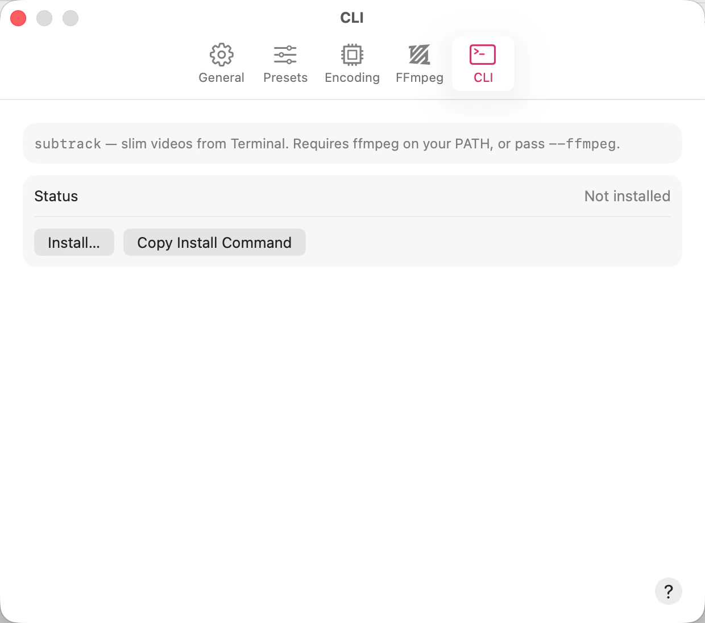

subtrack tool
PATH. The panel opens at
/usr/local/bin; a bin folder in your home directory works just as well
and needs no administrator access.The Status row then shows the full path the tool landed at, with a Reveal button that selects it in the Finder.
If the folder isn’t writable — which /usr/local/bin usually isn’t — SubTrack doesn’t
ask for your administrator password. It has no privileged helper to hand one to, and an app asking
for your password to copy a file is a habit worth not teaching. The pane says That folder needs
administrator access — run this instead and shows the exact sudo cp command with a
Copy button. Paste that into Terminal and authenticate there, where you can see what
you’re authorizing. Copy Install Command does the same without opening the panel
first, aimed at /usr/local/bin.
An install you run yourself is a real install, but SubTrack didn’t perform it and
doesn’t know about it — Status goes on saying Not installed.
Confirm that one with which subtrack.